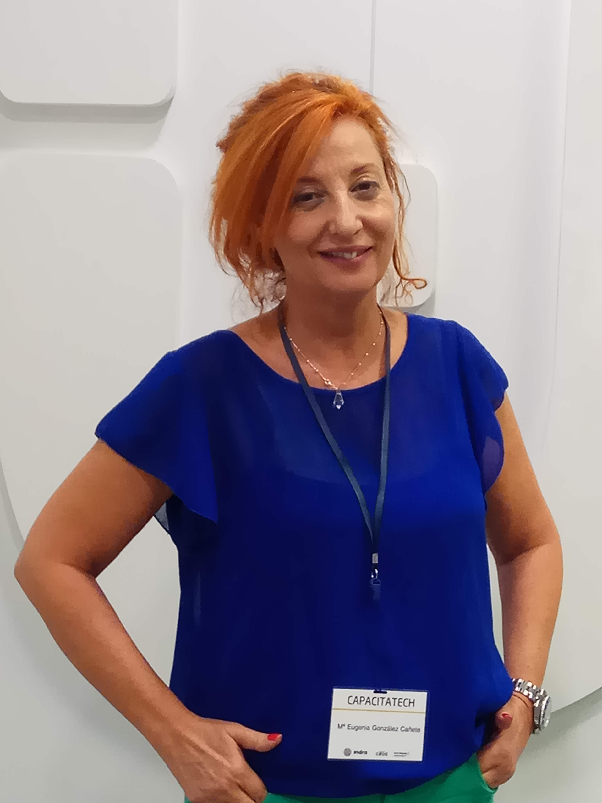

Filosofía
"Nuestro equipo ofrece una delicada atención y un buen servicio con una buena actitud positiva, empeño y dedicación en el trabajo que realizamos con esmero y al detalle para la satisfacción de nuestros clientes y productos."..... Estamos en continua formación y retroalimentación de la experiencia y conocimientos obtenidos, mejorando así día a día en nuestros procesos de trabajo así como en los resultados finales y como un crecimiento personal de nosotros mismos y de nuestro equipo tanto personal como profesionalmente mejorando en la colaboración y esfuerzo que realizamos como trabajo en equipo"
Conocenos
-

Mª Eugenia
Especialista en el ámbito del Marketing y de entornos digitales. Import Manager China y países Far-East por más de 15 años. Formadora presencial y blended, area empresa(Marketing, Comercio Internacional y Economía). Encantada con las nuevas tecnologías y dispuesta a aprenderlas. “D E S P A C I T O” pero con prisas.

Felix
Import Manager China y países Far-East por más de 15 años. Formadora presencial y blended, area empresa(Marketing, Comercio Internacional y Economía). Encantada con las nuevas tecnologías y dispuesta a aprenderlas. “D E S P A C I T O” pero con prisas.
Iván
Técnico Especialista en repación y mantenimiento de equipos informáticos a nivel Hardware y Software, con una larga trayectoria profesional de 24 años. Técnico Superior en Desarrollo de Aplicaciones Informáticas. Actualmente me encuentro realizado un curso de Especialista en Maquetación Web. Soy una persona dinámica, resolutiva, proactiva, positiva, me gusta trabajar en equipo y sobre todo con muchas ganas de poder aportar y recibir conocimientos.
Valores
- El compromiso y lealtad con la empresa y con el cliente.
- Mejora continua de la calidad, eficacia y eficiencia.
- Mejora de la profesionalidad basada en el aprendizaje continúo.
- Iniciativa profesional y capacidad de resolución. Innovación.
- Integridad, responsabilidad y confianza en éstas, basadas en la comunicación abierta, honesta y clara.
- Construcción de una empresa y su equipo basados en la actitud positiva, mejora del clima laboral y la calidad humana.
- El trabajo y el valor del Esfuerzo y la importancia de la Conciliación de éste con la vida personal.
- La colaboración entre compañeros, el equipo profesional.
- Con humildad, garantía de futuro forjada en la disciplina.
Todo ello desde el respeto, la tolerancia y la comprensión.